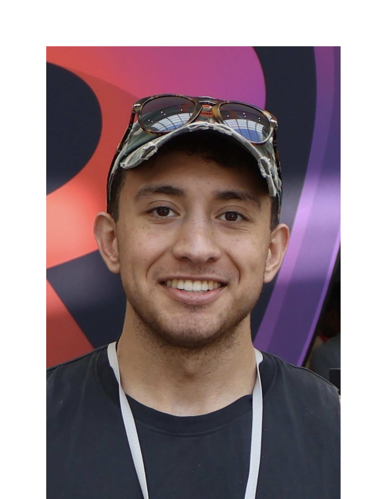

Cybersecurity graduate (3.78 GPA, Honors) from New Mexico State University with hands-on experience in technical support, troubleshooting, and operations. Grounded in networking, security, digital forensics, and information systems — and used to working under pressure, solving problems, and explaining technical issues to people who aren't technical.
I grew up in a Navy family, moving around the world from San Diego to Sardinia, Italy, and places in between. That upbringing taught me to adapt fast and work well with people from all kinds of backgrounds. It's also where the pull toward service came from: I wanted a way to protect and help people, and cybersecurity felt like one of the most direct paths to do that.
After college, I took time to travel and pursued Navy OCS for 11 months but didnt receive a slot. That process, along with playing high school soccer, serving as Risk Manager for Sigma Chi, and being a part of different philanthropy projects/work since is where a lot of my leadership and communication instincts come from.
Outside of work you'll usually find me running, lifting, biking, or snowboarding. I lead by example, communicate clearly, and bring the same discipline to a project/team that I bring to everything I commit to.
Currently working through multiple certifications with Security+ as the primary focus, building on coursework in network security, vulnerability testing, and incident response.
Promoted safe practices and managed organizational risk, communicating expectations and safety procedures to members and exercising judgment in sensitive situations.
Led transportation logistics for a charitable service project in Guatemala, coordinating the movement of students, equipment, and supplies in an unfamiliar, changing environment.